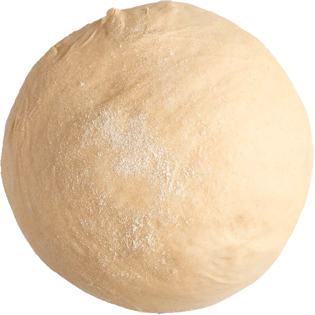
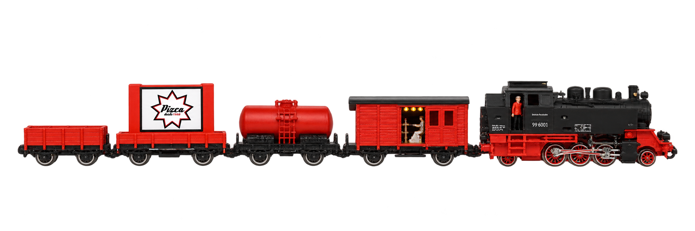
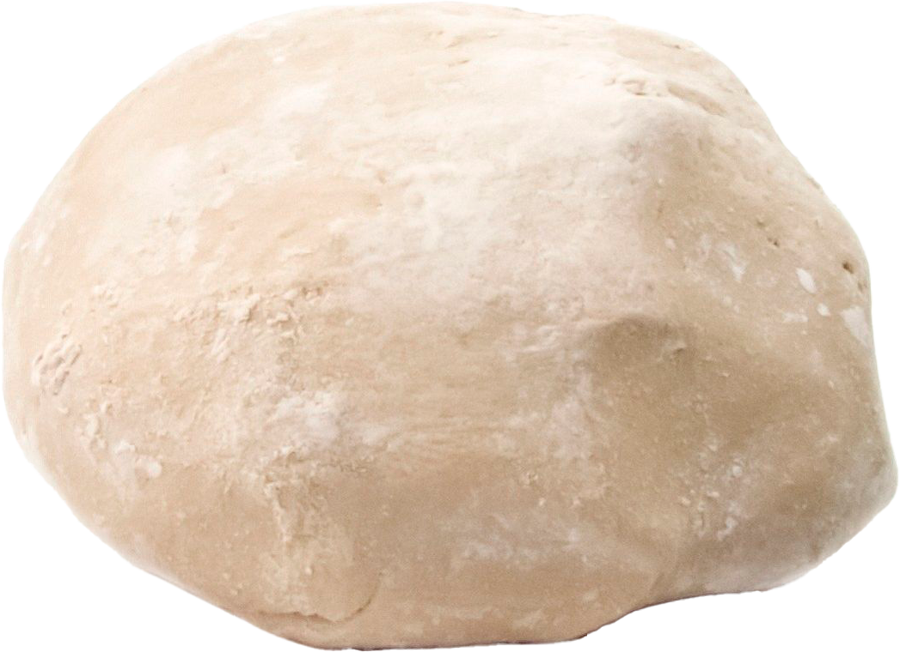
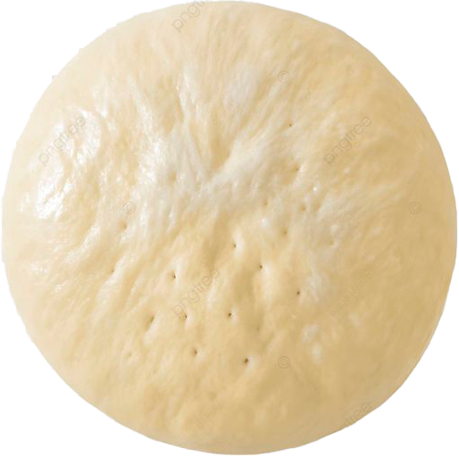
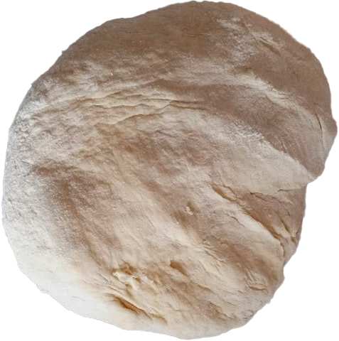
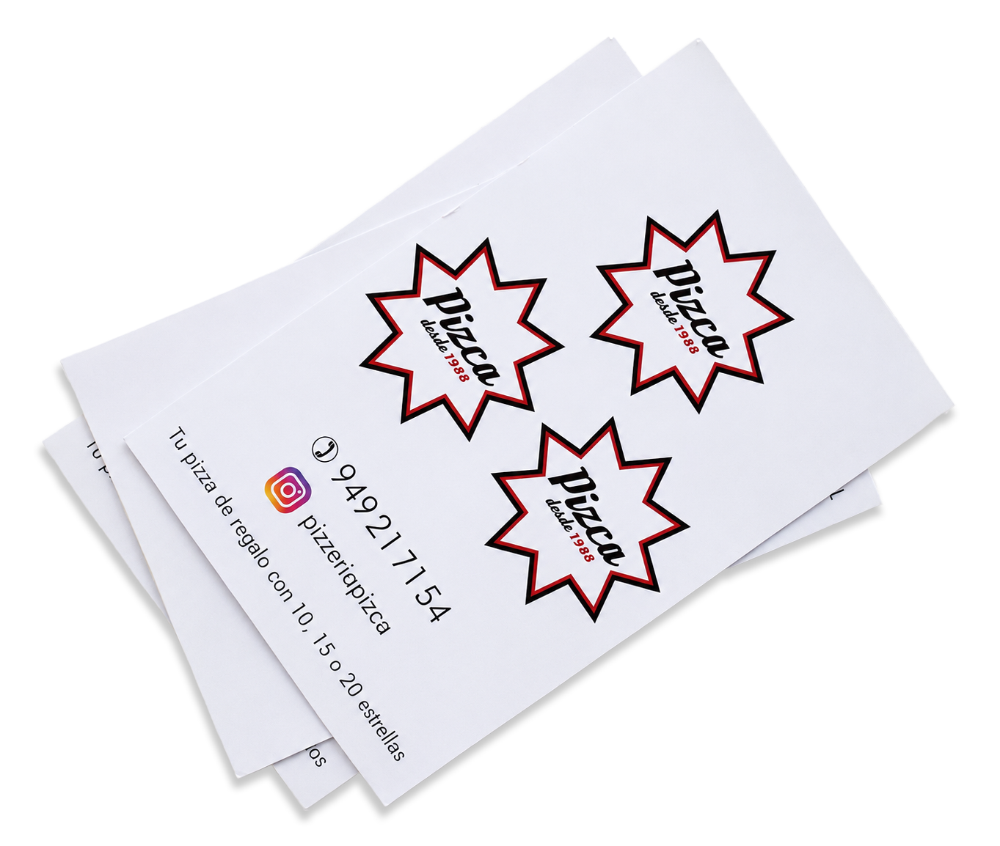

Margarita
Jamón de york, tomate, mozzarella y orégano.
Cargando...



Como el primer día
Pizzas caseras, ingredientes frescos y recetas de siempre. Un sitio de barrio, para personas.
Ver carta

Jamón de york, tomate, mozzarella y orégano.

Bacon, tomate, mozzarella y orégano.

Mozzarella, queso azul, edam y cheddar.

Atún, pimiento rojo, cebolla, aceitunas, tomate y mozzarella.
Cada mes, nuestro local se convierte en un espacio para descubrir el trabajo de artistas locales.
Foto 1 de 4
José Luis Ranz, que llena Pizca de rincones, paisajes y pequeños detalles que a veces pasan desapercibidos. ¡Una exposición para mirar con calma y disfrutar!.
Club Pizca
Únete al Club Pizca y disfruta de ventajas pensadas para los que siempre repiten.

Una pizca
de ventajas